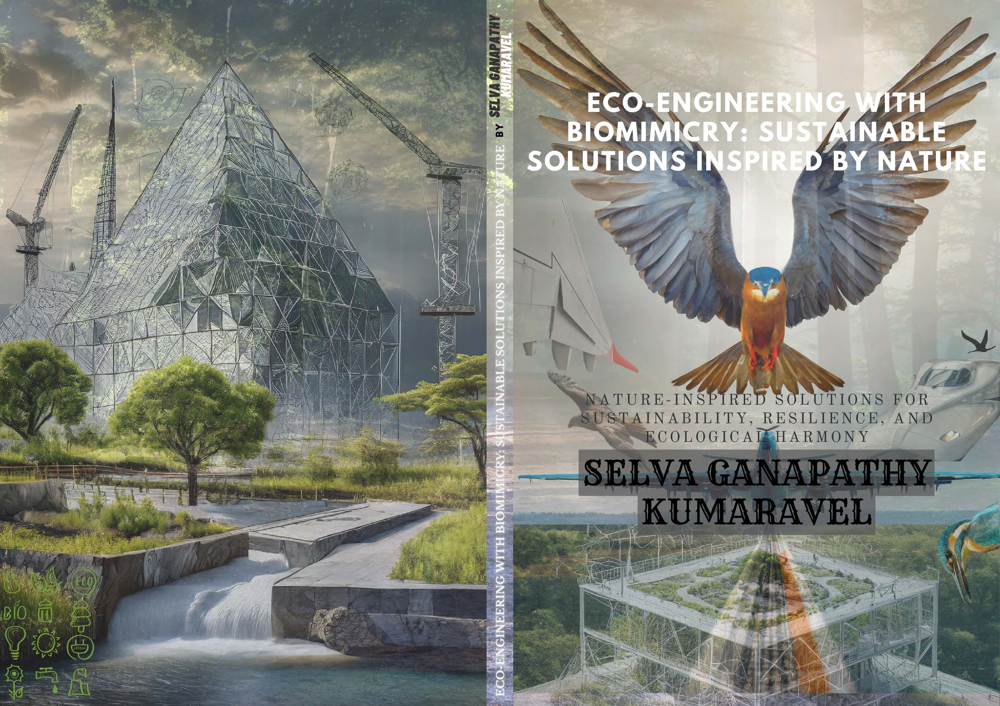

Publications
Resume
Publications
Projects
Cool Stuff
Biography
Linkedin
Orcid
GitHub
üì´ Publications
Patent application title “Optimized turbine blade with internal multi-channel fluid cooling for improved thermal regulation, operational efficiency and durability”. Application No.: 432885-001, 2024, Intellectual Property Rights
Book title “Challenges of Future Engineering and Technology”. 2024, ISBN: 9798301583865
Book title “Technovations: Case Studies in Advanced Technologies”. 2024, ISBN: 9798345567029

Book title “Eco-Engineering with Biomimicry: Sustainable Solutions Inspired by Nature”. 2024, ISBN: 9798345053560
Book title “The Quests of Leo Patterson: Science, Slime, and Endless Curiosity”. 2024, ISBN: 9798345459096
Behaviour of fibre length in banana fibre reinforced thermoplastic composites under High Velocity Impact Performance, (2022), Springer
Evolution of 5D printing and its vast applications: A Review, (2022), Springer
An Interpretation on Automated 3D Printer Controlled using Internet of Things (IoT), (2020), SERSC
Development of Superhydrophobic Nanocomposite Coatings on FRP Sheet Surface for Anti-Icing and Wear-Resistance Applications, (2019), SSRN
Mechanical Properties of Aluminium Composite Material Reinforced with Silicon Carbide and Titanium Carbide by Stir Casting Method, (2018), IJR